REGENERAÇÃO
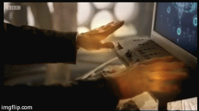
todo Time Lord, ao sofrer algum dano letal ou quando quer (se for treinado para tal) libera um hormônio,
lindos, que ativa o processo de regeneração das células de seu corpo por meio de um procedimento que muda sua constituição física e psicológica,
quase como se surgisse um homem completamente diferente a partir de outro, no entanto com as mesmas memórias.
Durante a regeneração, o corpo de um Time Lord pode liberar luz ofuscante branca e/ou colorida, corrente elétrica,
uma violenta carga de bioenergia (que destrói tudo a sua volta) ou ainda, ele pode simplesmente se transformar sem liberação de energia.
Caso o Time Lord seja fatalmente ferido antes da regeneração se concluir, esta falhará e ele morrerá.
O processo é doloroso e causa efeitos colaterais. Por certo período de tempo após a regeneração,
o corpo do Time Lord permanece com muitos lindos, o que possibilita, em caso de dano,
a regeneração parcial de algum órgão ou membro. Além disso, implicações como amnésia,
comportamento anormal, confusão mental e/ou inconsciência são comuns.
O Doctor jamais escolheu quando regenerar ou qual seria sua forma após o procedimento,
tendo sido, até mesmo, obrigado a regenerar em favor da pena por quebrar a lei de não-interferência dos Time Lords.
Até o momento, o Doctor já regenerou onze vezes, e possui doze encarnações.
AS ENCARNAÇÕES
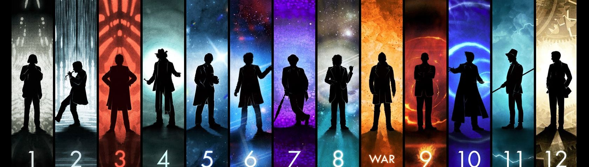
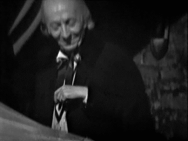
1º Doctor(William Hartnell): Inicialmente uma figura pedante,
desconfiada e que possuía um tom de superioridade,
esta encarnação foi “amolecendo” com o tempo.
Se no começo este Doctor arrisa a vida de seus companheiros para explorar o desconhecido,
outrora mesmo que às vezes fosse sarcástico perante a ignorância alheia.
Nele vemos traços de certa forma infantis,
ao mesmo tempo que o começo de uma figura que busca a justiça a qualquer custo.
Se tornava sempre uma figura protetora quando acompanhado de jovens garotas,
pois essas lhe recordavam sua neta e primeira companheira de viagens, Susan Foreman.
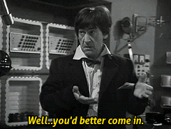
2º Doctor(Patrick Troughton): Uma total mudança de personalidade: da figura de um avô para a de seu tio favorito.
Caloroso, palhaço e trapalhão, este Doctor escondia sua imensa sagacidade, para que o subestimassem e assim, ele pudesse dar cabo aos seus planos.
Por trás desta aparência displicente, sempre havia um raciocínio meticuloso nas ações deste Doctor. Ele era impiedoso com seus inimigos recorrentes, como os Cybermen. Sempre levava consigo uma flauta, que tocava ocasionalmente, e um diário de 500 anos no qual registrava suas aventuras. Durante quase toda esta encarnação, viajou com o escocês Jamie McCrimmon, fiel companheiro do século XIX.
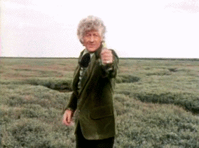
3º Doctor(Jon Pertwee): Diferentemente de seus predecessores, este Doctor é um homem de ação e quando necessário, utilizava de suas habilidades em Aikido Venusiano.
Ele permaneceu exilado na Terra durante boa parte de sua existência e, trabalhando para a UNIT, tinha o hábito de empregar sua mente brilhante em invenções, dentre as quais, seu querido carro, Bessie.
Esta encarnação era mais “cavalheiresca” e, de certa forma, oposta ao segundo Doctor, o que acarreta desentendimentos entre os Doctors quando as duas encarnações do personagem se encontram. Inicialmente, o terceiro Doctor teve Liz Shaw como assistente, depois passou a se aventurar com sua companheira mais querida, Jo Grant, e perto de seu fim, levou Sarah Jane Smith à TARDIS.
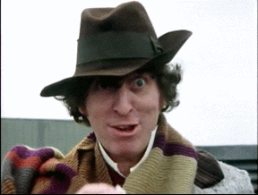
4º Doctor(Tom Baker) : Uma figura excêntrica, distinto de sua própria raça e nenhuma característica “humana” em si.
Bem humorado, engraçado, este Doctor tinha uma personalidade mais jovem que a de seus predecessores.
Em contraste com seu “ser” anterior, este não suportava trabalhar para a UNIT, e por isso, após ter o exílio encerado, manteve-se viajando quase que constantemente, ajudando a organização em poucas ocasiões.
Um amante da paz, podia se tornar uma figura violenta e agressiva quando fosse necessário, sendo completamente oposto à ideia de figuras autoritárias em qualquer aspecto.
É muito difícil vê-lo sem seu cachecol, em contrapartida, sempre está a oferecer “jelly babies” a todos.
As companheiras que marcam sua existência são aquela que lhe viu regenerar, Sarah Jane Smith; a selvagem Leela e a Time Lady Romana.
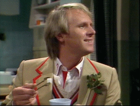
5º Doctor(Peter Davison): Após uma regeneração difícil que por pouco não falhou, o Quinto Doctor se revelou como a encarnação mais humana e vulnerável do Doctor, abrindo-se mais com as suas companheiras e sendo extremamente contra violência desnecessária.
Adorava cricket e usava um talo de aipo na lapela.
Ao contrário de encarnações passadas, ele tratava todas suas companheiras como partes de um time, e não como meras ajudantes.
Era menos pretensioso e egoísta, preferia resolver os problemas usando comunicação; e não gostava de usar sua vasta experiência como uma desculpa para liderar todas as situações.
Viajou com três companheiros, Adric, Tegan e Nyssa, sendo a última a mais importante durante esse período.
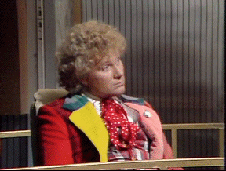
6º Doctor(Colin Baker): Em contraste com sua última encarnação, o Sexto Doctor era arrogante, dramático, teimoso e tinha um grande ego, acreditando ser superior a todos que encontrava.
Apesar disso, também possuia um lado mais emotivo e preocupado, sempre determinado em salvar todos aqueles que podia.
Ele adorava uma citação, sempre soltando alguma que achava apropriada para a aventura em que ele e suas companheiras estavam.
Era mais violento que seus antecessores, capaz até de matar.
Passou a maior parte de suas viagens com apenas uma companheira.
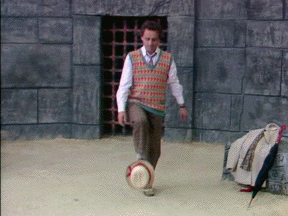
7º Doctor(Sylvester McCoy) : Era um exímio estrategista e hábil manipulador, vendo a guerra entre o bem e o mal como um jogo de xadrez e aqueles ao seu redor como peões.
Era originalmente excêntrico, alegre e despreocupado, porém assumiu essa personalidade mais séria e austera com o passar do tempo.
Levava o seu papel como Time Lord extremamente a sério, e fazia tudo o que julgava necessário sem medir as consequências de suas ações.
Apesar disso, ele se importava com aqueles com quem viajava, tendo uma relação paterna com Ace, sua companheira adolescente.
Viajou também com Mel, que o acompanhou durante o início de sua encarnação.
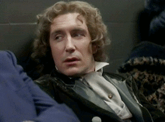
8º Doctor(Paul McGann) : Um tanto romântico e sensível, respeitava e amava todo o tipo de vida, admirando humanos como nenhum outro.
Tinha um senso de humor irreverente, similar ao de sua segunda encarnação.
Teve alguns ataques de amnésia, primeiro após a sua regeneração e, mais tarde, após a primeira destruição de Gallifrey.
Passou sua vida viajando entre universos paralelos e paradoxos, evitando a qualquer custo tomar parte na guerra temporal entre Daleks e Time Lords.
Após tentar em vão salvar uma viajante espacial, acaba, com a ajuda da irmandade de Karn, escolhendo regenerar num Guerreiro.
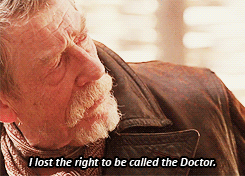
War Doctor(John Hurt): É a encarnação que renega sua promessa como “Doctor”, que não se considera um curador, mas sim um guerreiro.
Nascido para lutar na Última Grande Guerra Temporal, dedicou toda sua vida a isso, mas, já velho e exausto do fardo que leva consigo, decide encerrá-la usando o Momento, arma de destruição em massa de Gallifrey que possui consciência.
Ele encerra a guerra, não da forma que esperava ou de como se lembrará, mas tais ações levam a um efeito devastador nas próximas três encarnações, que negam sua existência.
Esteve presente na queda de Arcadia, segunda maior cidade de Gallifrey.
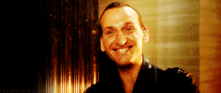
9º Doctor(Christopher Eccleston) : A última Time War deixou sequelas emocionais no Doctor, que se culpava por ter destruído a os Daleks e a sua própria raça.
As feridas dessa guerra fizeram com que o Doctor criasse uma nova admiração pelas maravilhas do universo e um desejo de mantê-lo seguro, demonstrando uma enorme compaixão por todas as espécies; além de uma certa curiosidade pela humanidade.
A maioria de suas aventuras foram no Planeta Terra, em companhia de Rose Tyler, com quem criou uma forte conexão.
Foi forçado a se regenerar após absorver toda a energia do vórtex do tempo para salvar sua companheira.
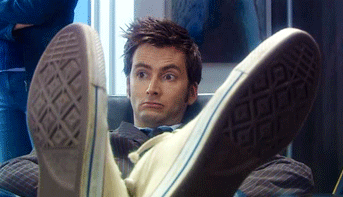
10º Doctor(David Tennant) : Extremamente sagaz, carismático e por certas vezes exagerado, era uma figura ainda abalada pela Time War.
Quando impulsionado por raiva ou justiça, agia sem hesitação, fazendo tudo o que julgava necessário, de forma até inconsequente.
Como apontou uma de suas companheiras, Donna Noble, ele precisava de alguém ao seu lado para que não se deixasse levar por esses impulsos.
Sua relação com suas companheiras chegou a ter ápices românticos, exemplo de Rose Tyler, cuja perda causou-lhe dor o bastante para ignorar a veneração de Martha Jones por ele.
Regenerou também para salvar outrem, logo após impedir os planos do Alto Conselho de Gallifrey de destruir o tempo.
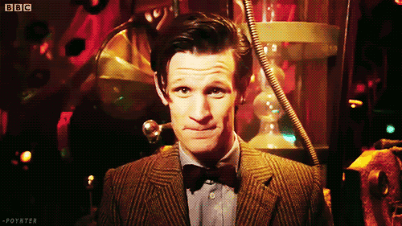
11º Doctor(Matt Smith): Excêntrico, bem-humorado, otimista, entusiasmado e dono de um vestuário um tanto criativo e de muitas frases de efeito, o 11º Doctor exibe dois lados contrastantes de sua personalidade: muitas vezes, é bobo e engraçado, agindo como uma criança de quatro anos; e em outras, deixa transparecer toda a dor, raiva e sofrimento de seus 1200 anos de vida.
É extremamente altruísta, e está sempre disposto a se sacrificar pelo bem do universo e de seus amigos, ficando enfurecido e desapontado quando falha em salvar alguém em perigo.
Ele vive um intenso e confuso romance com a misteriosa River Song, com quem sempre se encontra fora de ordem.
Teve 3 companheiros, mas sempre que preciso, era ajudado por outros tantos queridos amigos.
Participou com o War Doctor e o 10º Doctor no desfecho da Time War, sendo esta a encarnação que consegue a redenção pelos feitos que encerraram a guerra.
Passou os últimos 900 anos de sua vida lutando contra forças mortais para proteger o planeta Trenzalore, fazendo com que seu corpo envelhecesse e enfraquecesse.
À beira de morrer de velhice, Clara (sua companion) convence os Senhores do Tempo a conceder-lhe um novo ciclo de regeneração, restaurando sua juventude por alguns minutos, mas que resulta em mais uma regeneração.
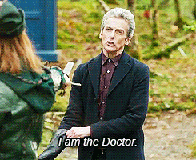
12º Doctor(Peter Capaldi): Surgiu após a regeneração do 11º Doctor em Trenzalore, sendo a “décima terceira regeneração”.
É a primeira encarnação do segundo ciclo de regeneração, concedido pelos Senhores do Tempo.
exibe um humor sarcástico.
Tal como a sua sétima encarnação, é manipulador e prático.
Por não ser tão empático como seus antecessores imediatos é considerado muitas vezes insensível ou indiferente em certas ocasiões.
Ele compartilha a falta de tato e o comportamento estranho do Décimo Primeiro Doutor além de se concentrar completamente na tarefa que tem em mãos.
No entanto, por causa disso, expressou dúvidas quanto a saber se era um homem bom.
Ele finalmente aceita que não é um bom homem, mas decide também que não era mau, sendo apenas como se auto definiu “um idiota com uma caixa”.
Também não é completamente indiferente: mesmo quando Clara Oswald (Jenna Coleman) tentou forçá-lo a ajudá-la a salvar Danny Pink (Samuel Anderson) o traindo da pior maneira, sua disposição em auxiliá-la ou o quanto ele se importa com ela nao mudou.